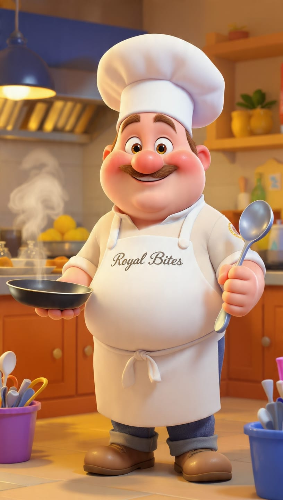
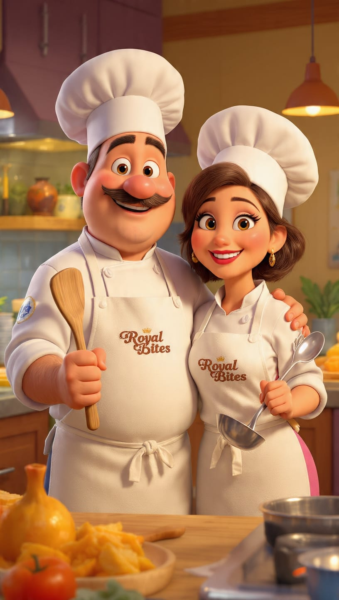

Founded in the serene surroundings of Assi Ghat, Varanasi, Royal Bites is not just a restaurant, it is a culinary destination. We take pride in blending secret traditional recipes with modern flavors to create a truly premium dining experience. Every dish we serve is crafted with fresh, handpicked ingredients, passion, and a commitment to excellence. At Royal Bites, we don't just serve food—we serve unforgettable memories.
Zara bring 10 years of experience in blending authentic Indian spices. Her signature curries are the heart of Royal Bites.

Known for his magic with the tandoor and modern continental dishes, Chef Rahul ensures every plate is a masterpiece. His passion for perfection makes every bite rich, flavorful, and unforgettable.

Together, Zara and Rahul from the perfect culinary team. Their combined love for food, warm hospitality, and dedication ensure that every guest at Assi Ghat leaves with a big smile and a craving to return.
We use 100% fresh and organic ingredients.
Quick, polite, and premium table service.
A perfect and peaceful ambience at Assi Ghat.